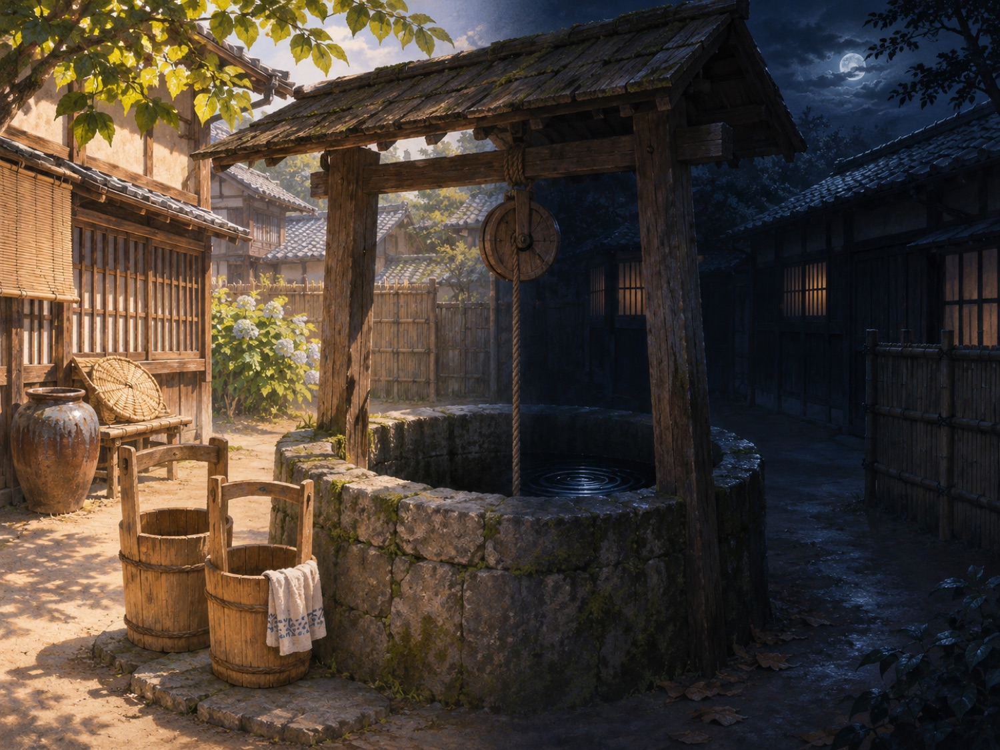
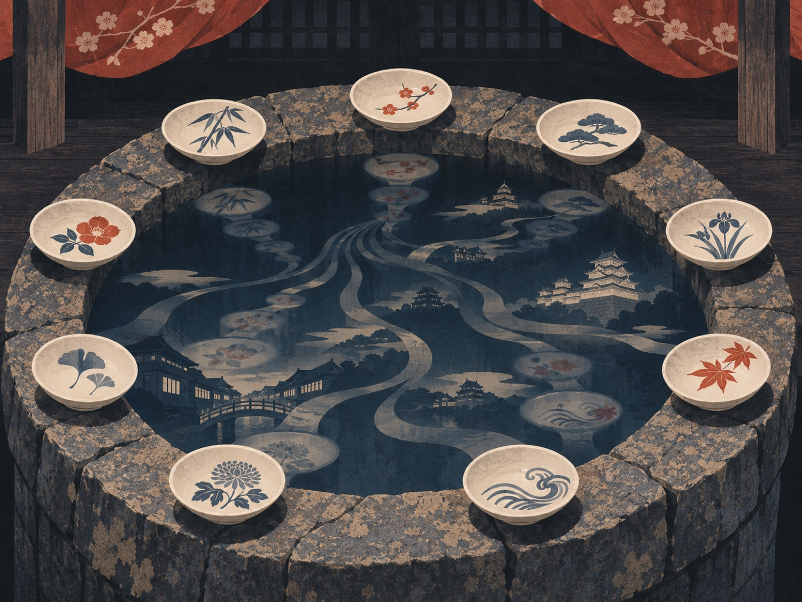

A voice rises from an old well: “One plate… two plates…” It reaches nine, breaks into grief, then begins again. This is the scene most international readers associate with Okiku, the servant at the center of the Sarayashiki—“Dish Mansion”—story family. At Himeji Castle, visitors can stand beside a real shaft called Okiku’s Well. In Edo-Tokyo versions, the tragedy belongs to a samurai residence far away.
That geographical contradiction is the first clue. There is no single verified murder file behind every telling, and the castle well is not archaeological proof that a ghost counted plates there. “Okiku” is better understood as a powerful story pattern that moved between oral tales, printed books, theater, art, comedy and local place-making. The well made that movement possible because it was never merely a spooky hole.
Before the ghost, there was the well
For communities without piped water, a well was infrastructure. It supported drinking, cooking, washing and firefighting; its condition affected every household that depended on it. A covered opening could protect the water. An uncovered shaft could also be a fall hazard, a place where objects disappeared and a vertical passage whose bottom was difficult to see.
Water carried sacred meaning as well as practical value. Research at Japan’s National Museum of Japanese History treats wells, village springs, irrigation mouths and water-deity rites as parts of one larger relationship between daily survival and belief. A useful source could be thanked, purified or ritually closed. Those practices should not be flattened into “Japanese people believed every well was haunted.” They show something subtler: water sources demanded care, and neglect had consequences both material and moral.

That combination is ideal for narrative. A well joins the visible world to groundwater below; it gives life, yet can conceal death; it is communal by day and isolated after dark. It also produces sound without revealing its source. A falling drop, bucket rope or echo can become a voice before the listener sees anything. The architecture does half the storyteller’s work.
Okiku was not born in one castle well
The Dish Mansion family has deep roots and many addresses. A 1689 collection includes a Matsue story in which a servant accused over a missing plate is killed and heard counting at a well. Later texts attach different names, masters and motives. Baba Bunko’s 1758 Edo narrative became especially influential; the National Diet Library notes that it describes Kiku’s specter counting from midnight until dawn while light trails from the well.
Himeji’s Banshū Sarayashiki branch instead embeds Okiku in a political conspiracy involving Aoyama Tetsuzan. In a familiar later telling, she discovers a plot, refuses the advances of a conspirator, and is framed through one missing plate before being killed and thrown into a well. Himeji Castle’s official history says the well in the Kami-yamazato enclosure is traditionally identified with the story. The careful word is “traditionally”: Himeji’s own castle research directs readers to scholarship asking whether the legend has a factual basis.

Modern summaries often splice these branches into one biography: a maid named Okiku, a cruel master, ten precious plates, a well and a nightly count. That version is memorable, but it hides the history of transmission. Variants are not failed copies. Each rearrangement tells us what a new audience needed—a political thriller in Himeji, moral horror in Edo, a stage role, an image, or even a comic reversal.
The count is a machine for suspense
Why plates? They are domestic objects but, in the story, also evidence: a complete set confirms order, while one missing piece turns a household inventory into an accusation. Counting lets an audience anticipate the exact breaking point. One through eight builds rhythm; nine confirms the absence; ten never arrives. Then the loop resets.
The pattern proved flexible enough for humor. In comic rakugo treatments, Okiku can become so famous that crowds gather for her performance. Horror turns into entertainment, and the ghost acquires something like a schedule. That is not disrespectful noise added to a pure legend. It shows how Edo-period popular culture could consume, parody and resell fear—the same cycle visible in prints of famous apparitions.
| Story element | What often remains | What changes |
|---|---|---|
| The woman | A wronged household servant | Okiku or another name; spy, lover, victim or moral example |
| The plates | A valuable set becomes incomplete | Who hides or breaks one, and whether the accusation is deliberate |
| The well | Death is concealed and a voice returns | Edo mansion, Himeji castle tradition or another local site |
| The haunting | Counting stops before completion | Terror, mourning, vengeance, release or comedy |
What to notice at Himeji Castle
Okiku’s Well stands inside Himeji Castle’s paid area, in the Kami-yamazato enclosure below the main keep. Look at the shaft as a piece of castle infrastructure first: its stone rim, depth, placement and relationship to defensive buildings. Then consider what the label does. It turns an otherwise quiet opening into a listening place. The legend changes how visitors hold their bodies—leaning closer, lowering their voices, waiting for a count they know they will not hear.
Himeji is a living heritage site, not a haunted-house set. Crowds are heaviest during cherry-blossom season, Golden Week and other holidays; heat and rain can make the long route more tiring. Photography rules and restricted areas should be respected. If you cannot visit, the castle’s official history and digital guides provide a better introduction than an unsafe “ghost hunt.”
How to read an old-well story
Ask three questions. First, what did the well do for the community before it frightened anyone? Second, when does the specific version first appear in a document, performance or local guide? Third, what has been added later to make the story fit a named place? Those questions keep folklore alive without confusing it with forensic history.
The Japanese word for well is ido (井戸), while kaidan (怪談) means a strange or ghostly tale. You can practice Japanese reading at the free, no-signup Japanese Training Lab, then learn while playing in DraMap, the iOS app created by this site’s editor.
And if you want to see what the castle city and present-day Japan feel like beyond the legend, walk real Japan with Yuji on TikTok LIVE. A live street is not proof of a ghost, but it restores the modern world that dramatic retellings often crop away.
Reporting sources
- Himeji Castle official site: history of the castle and Okiku’s Well (Himeji City).
- Himeji Castle official site: points of interest, including Okiku’s Well (Himeji City).
- Himeji City Castle Research Office: Himeji Castle, people and legends (official research guide).
- Hyogo Prefectural Museum of History: glossary to the Dish Mansion traditions (official museum research).
- Hyogo Prefectural Museum of History: visiting the Banshū Sarayashiki story (official museum account of the Himeji branch).
- National Diet Library Image Bank: “Kimodameshi—Hyaku-monogatari” (official digital exhibition).
- National Diet Library Newsletter No. 231 (2020; Baba Bunko and the well-counting passage).
- National Diet Library Search: Sarayashiki—The Ghost Okiku, the Plates and the Well (bibliographic record).
- National Museum of Japanese History: “Life Worlds Surrounding Water” (official research project on wells, use and belief).
- Smithsonian National Museum of Asian Art: “The Ghost of Okiku” (museum collection record).
- Twice Told: “Okiku and the well at Himeji Castle” (source-critical chronology linking the 1689 Matsue text to digital primary materials).
Sources, admission details and links rechecked November 18, 2026 (JST). Folklore records document stories and traditions, not verified supernatural events.

Keep exploring with Yuji
Yuji Shimizu researches and edits Japan Unfolded in Japan and created DraMap. These links are the publisher’s own invitations, not third-party endorsements.